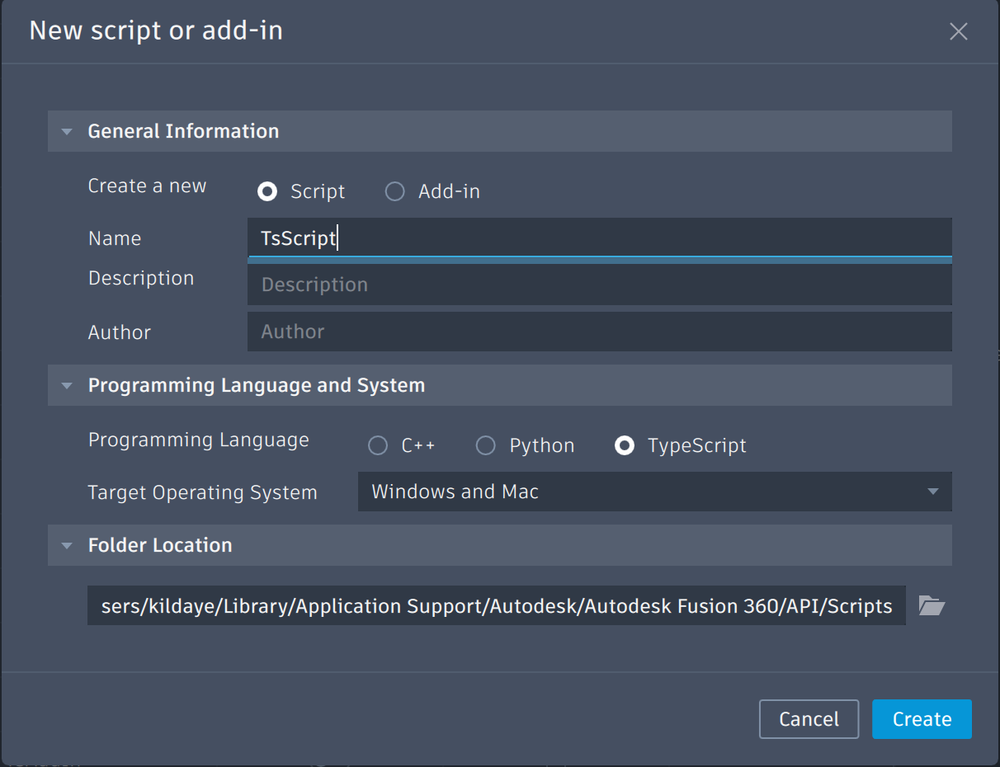
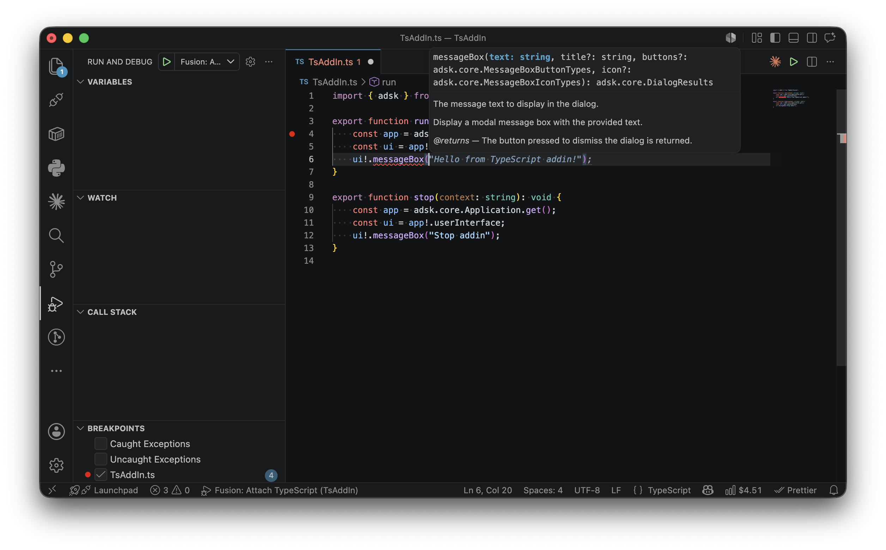

Fusion has a single API that can be used from Python, C++, or TypeScript. In most cases, the API is used in a very similar way regardless of the programming language with just small language-specific syntax changes. However, in some cases there are significant differences in how the API is used because of a particular language. This topic discusses the differences that are unique to TypeScript and covers the subjects listed below.
The Fusion TypeScript API is accessed by importing from one of two modules: @adsk/fusion for desktop scripts and add-ins, or @adsk/fusion/automation for scripts that run on the Automation Service. Both export the same adsk namespace object — the difference is in the permission model. @adsk/fusion carries Desktop permissions (network, file I/O, UI, canvas, text commands), while @adsk/fusion/automation carries Service permissions (network and file I/O only, no UI access).
// Desktop script or add-in.
import { adsk } from "@adsk/fusion";
// Automation Service script.
import { adsk } from "@adsk/fusion/automation";
You can also import individual sub-namespaces directly:
import { core } from "@adsk/fusion/core";
import { fusion } from "@adsk/fusion/fusion";
import { cam } from "@adsk/fusion/cam";
To create a new TypeScript script or add-in you use the "Create" button in the Scripts and Add-Ins dialog to display the "Create New Script or Add-In" dialog and choose "TypeScript" as the programming language.

Creating a new TypeScript script will create a working script that you can immediately run. It provides a framework that you can edit to add the functionality your script requires.
TypeScript scripts and add-ins follow a lifecycle based on exported functions. If your main module exports a function named run, it will be called automatically after the module is evaluated. If it exports a function named stop, it will be called when the script or add-in is stopped. Both receive a JSON string parameter with context information.
For scripts, run is called, then stop is called immediately, and the script ends. The example below shows a basic TypeScript script:
import { adsk } from "@adsk/fusion";
// Initialize the global variables for the Application and UserInterface objects.
const app = adsk.core.Application.get();
const ui = app!.userInterface;
// This function is called by Fusion when the script is run.
export function run(_context: string): void {
try {
ui!.messageBox(`"${app!.activeDocument!.name}" is the active Document.`);
adsk.log(`"${app!.activeDocument!.name}" is the active Document.`);
} catch (e) {
app!.log(`Failed:\n${e}`);
adsk.log(`Failed:\n${e}`);
}
}
For add-ins that need to stay running (for example, to respond to events or provide custom commands), the stop function is captured and called later when the user stops the add-in or the application shuts down:
import { adsk } from "@adsk/fusion";
export function run(context: string): void {
const app = adsk.core.Application.get();
const ui = app!.userInterface;
ui!.messageBox("Hello add-in!");
}
export function stop(context: string): void {
const app = adsk.core.Application.get();
const ui = app!.userInterface;
ui!.messageBox("Goodbye add-in!");
}
If run or stop are not exported, they are simply not called — the module's top-level code still executes normally. This differs from Python where run() is called via convention and add-ins must explicitly call adsk.autoTerminate(False).
VS Code is the recommended IDE for editing and debugging TypeScript scripts and add-ins. To open a script directly from Fusion, run the Scripts and Add-Ins command, select the script or add-in, and click the "Edit" button.
Because TypeScript is statically typed, VS Code provides rich code completion, inline error checking, and refactoring support out of the box. The API type definition files (.d.ts) included with the script template give you full IntelliSense coverage for the entire Fusion API.

When you run a script, TypeScript files are transpiled to JavaScript before execution. Plain .js files skip transpilation and are executed directly, so you can also use the API from JavaScript without the TypeScript compiler.
To debug a script locally, use the debug launch configuration in VS Code.
TypeScript does not support output or 'by reference' arguments. For API methods that document out parameters, the TypeScript binding returns those values as elements of an array that can be destructured directly into named variables. When the method also has a documented return value, that return value is the first element of the array, followed by the out arguments in the order they appear in the documentation. You pass only the input arguments to the method.
For example, the CurveEvaluator2D.getCurvature method takes an input parameter argument and is documented as returning a boolean along with two out arguments: a Vector2D direction and a double curvature. In TypeScript, you pass the input parameter and destructure the array of returned values:
const [success, direction, curvature] = curveEval.getCurvature(parameter);
if (success) {
adsk.log(`Curvature ${curvature} in direction (${direction.x}, ${direction.y}).`);
}
To handle events in TypeScript, you create an object with a notify method and pass it to the event's add method. Remove it with the event's remove method when you no longer need it. This is different from Python, where you define a handler class that extends adsk.core.XxxHandler.
import { adsk } from "@adsk/fusion";
export function run(context: string): void {
const app = adsk.core.Application.get();
const documentCreatedHandler = {
notify: (args: adsk.core.DocumentEventArgs) => {
adsk.log("Document created!");
},
};
app!.documentCreated.add(documentCreatedHandler);
}
Handlers left registered (added) are cleaned up (removed) automatically when the add-in stops.
Custom events are also supported. You can register a custom event with app.registerCustomEvent(id) and fire it with app.fireCustomEvent(id, data). Events fired from a different thread are automatically deferred to the main thread, preserving thread safety.
In Python, you typically iterate over API collections using a range-based index loop. In TypeScript, API collections such as BRepBodies, BRepFaces, Profiles, and ObjectCollection implement the JavaScript iteration protocol, so you can use for...of loops directly:
for (const face of body.faces) {
adsk.log(face.objectType);
}
You can also copy collections into arrays:
const allFaces: adsk.fusion.BRepFace[] = [];
for (const face of body.faces) {
allFaces.push(face);
}
Methods that accept array parameters also accept iterable API collections directly. This is more convenient than the Python approach where you typically need to build an ObjectCollection and add items to it one at a time.
It is common when writing a script that you need to determine the type of an object. For example, when the user selects an entity, you may want to verify that they selected the right type of object. In TypeScript you can check the type of an object using the instanceof operator or by examining the objectType property.
// Check if the selected entity is a BRep edge.
const selObj = ui!.selectEntity("Select an edge", "Edges").entity;
if (selObj instanceof adsk.fusion.BRepEdge) {
adsk.log("Selected a BRep edge.");
}
You can also use TypeScript's type narrowing with instanceof to get properly typed access to the derived class's methods and properties without needing a cast:
const product = app!.activeProduct;
if (product instanceof adsk.fusion.Design) {
// product is now typed as Design within this block.
const rootComp = product.rootComponent;
adsk.log(rootComp.name);
}
TypeScript also supports optional chaining (?.) and non-null assertion (!) for safely navigating nullable API properties:
// Optional chaining returns undefined if any step is null. const name = app?.activeDocument?.name; // Non-null assertion asserts the value is not null. const ui = app!.userInterface;
It is common to need to compare whether two object variables are referencing the same Fusion object. In TypeScript you can use the strict equality operator ===. The code below checks two variables to see if they reference the same face.
// Compare the two variables to see if they reference the same face.
if (face1 === face2) {
adsk.log("Faces are the same.");
}
The TypeScript API maintains an internal object cache so that when the same underlying Fusion object is returned from multiple API calls, you receive the same JavaScript object. This means === works reliably:
const app1 = adsk.core.Application.get(); const app2 = adsk.core.Application.get(); // app1 === app2 is true. const face = body.faces.item(3); let i = 0; for (const f of body.faces) { if (i === 3) { // face === f is true. } i++; }
This differs from Python, where the identity operator is is not guaranteed to work for Fusion objects. In Python you must compare using properties like entityToken. In TypeScript, strict equality (===) is the correct and reliable way to compare API objects.
TypeScript add-ins and scripts can include modules relative to, but not outside, their main directory.
import { my_exported_function } from "./Folder/MyModule";
my_exported_function();
The TypeScript API runtime provides a different set of built-in modules that cover the most common needs for scripting:
// File system (synchronous). import { readFileSync, writeFileSync } from "fs"; // File system (promise-based). import { readFile, writeFile } from "fs/promises";
The fetch function is available globally for making HTTP requests. It returns a Promise<Response> with text(), json(), and arrayBuffer() methods:
const response = await fetch("https://example.com/api/data");
const data = await response.json();
adsk.log(JSON.stringify(data));
Timer functions (setTimeout, setInterval, clearTimeout, clearInterval) and Base64 utilities (btoa, atob) are also available globally.
File system access is sandboxed to a special temporary directory. This applies to both Desktop and Service execution modes. Absolute paths and path traversal outside the sandbox are only available on the Desktop and read/write access must be explicitly enabled by the user. By default scripts and add-ins have read only access within their root directory.
TypeScript runs within the Fusion process on the main Fusion thread, just like Python. Because of this, when your program is running most of Fusion appears frozen because it never gets a chance to react to messages. A common example of this is when your script is editing the model — even though your program is successfully making changes, you don't see them until your program completes because the messages to update the display are not handled while the script is running.
The API supports a doEvents function which temporarily halts the execution of the script and gives Fusion a chance to handle any queued up messages. Below is an example that creates multiple occurrences of a component with the display updating after each one is added:
import { adsk } from "@adsk/fusion";
export function run(context: string): void {
const app = adsk.core.Application.get();
const ui = app!.userInterface;
const root = (app!.activeProduct as adsk.fusion.Design).rootComponent;
const occ = adsk.fusion.Occurrence.cast(
ui!.selectEntity("Select an occurrence", "Occurrences").entity
);
if (occ) {
const comp = occ.component;
const trans = occ.transform;
let offset = trans.getCell(0, 3);
for (let i = 0; i < 100; i++) {
offset += 5;
trans.setCell(0, 3, offset);
root.occurrences.addExistingComponent(comp, trans);
// Call doEvents to give Fusion a chance to react.
adsk.doEvents();
}
}
}